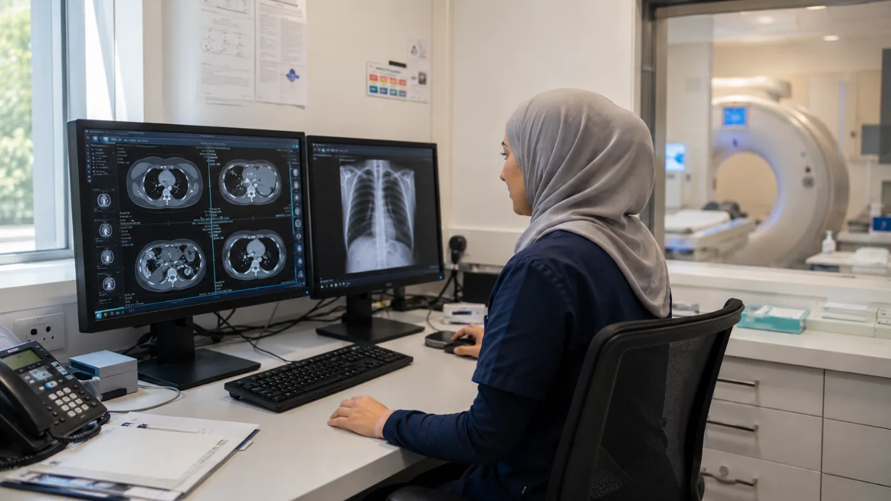

Career guide · Radiology · New Zealand
Radiology, with subspecialty depth and balance.
Strong demand, modern imaging, a life outside reporting.
RegistrationMedical Council of New Zealand, vocational
PathwayGreen List Tier 1 — straight to residence
Right nowSee current roles
Roles · New Zealand
Current opportunities
Roles we're recruiting for right now. If none is quite right, register your interest and we'll be in touch when something fits.
Essential
What actually matters, in five minutes
Seven questions that decide whether this move is worth exploring — answers first. The full detail sits one click below, and nothing has been removed.
Can I work there?Yes — vocational registration in radiology
You register with the Medical Council of New Zealand towards vocational registration in the radiology scope, usually with RANZCR advising the Council. Almost every consultant we move arrives by one of three vocational pathways — and if you hold a FRANZCR with general registration here, nothing is assessed for comparability because your fellowship already is the standard: ten working days.
Which pathway is yours →What could I earn?Published steps, then private
Public pay is set by years since you attained specialist registration — published, not negotiated — with on-call and allowances on top. The ASMS agreement is under renegotiation, so we give you the current step for the actual role rather than a scale that may already be stale. Private is where radiology income rises sharply, and many consultants do both.
How pay is set →Where are the jobs?A critical, sustained shortage
Consultant radiologists are actively recruited nationwide across hospital radiology and private imaging groups, with teleradiology models available too — so both the location and the shape of the week are genuinely negotiable.
See current roles →What will the work be like?Eight sessions, and protected time
Most senior medical officers work around eight clinical sessions a week of four to five hours, with protected time for teaching, service development and leadership. Rostered hours are respected and out-of-hours commitments clearly defined. General and subspecialty reporting sit alongside each other, and interventional work features in some roles.
The work itself →Can I bring my family?Yes — most people do
Partners and children can usually join you on visas linked to yours, and partners can usually work. Schools, childcare and the family logistics are explained once, properly, in the family guide.
Family moves, explained →What will moving cost?Verification is the real spend
Council fees, source verification of your qualifications through EPIC / MyIntealth, certificates of good standing, police clearance, visa fees for everyone moving, flights and shipping. Some employers contribute to relocation, some don’t — we get whatever is offered in writing.
The move, costed →How long could this take?Ten working days to several months
It depends entirely which pathway you are on, which is why we settle that in the first conversation. Source verification through EPIC / MyIntealth is often the single slowest step regardless of route, so we start it early rather than after the application.
The journey, sequenced →Ready to explore?
Three doors, no sign-up, no pressure.
Want the detail? Dig deeperWhy New Zealand, registration and the three vocational pathways, scope and the working week, pay, what makes it different, a typical day, what we can’t promise and the FAQs — everything, one click down.
Why New Zealand
Subspecialty work, modern imaging, and a country built for living
Consultant radiologists are in critical, sustained shortage here, public and private alike. We move consultants trained in the UK, Ireland, South Africa, the Middle East and beyond — and the work offers genuine subspecialty depth on modern imaging.
- Strong demand, public and private
- Subspecialty and general reporting
- Modern imaging and PACS
"The reporting is first-rate, and so are the weekends."
With the outdoors close at hand and a culture that values balance, many radiologists find the move gives back time without compromising the work.
Getting registered
Registration overview
Reviewed July 2026 · checked against the Medical Council of New Zealand’s current published guidance
To practise in New Zealand you'll register with the Medical Council of New Zealand (MCNZ). Consultant radiologists work towards vocational registration in radiology; we’ll help you understand your pathway from the start.
The Council assesses your specialist qualifications and experience against New Zealand standards, often alongside the RANZCR for the vocational (radiology) scope. As part of the process you'll typically need:
- Verification of your qualification
- Evidence of recent clinical practice
- A police / criminal-history clearance
- Confirmation of English-language proficiency, if required
Once registered, you’ll hold an Annual Practising Certificate (APC). We support you from understanding your pathway through to securing the right role.
Which vocational pathway fits you
Almost every consultant we move arrives by one of three MCNZ vocational pathways — and we'll tell you exactly which one is yours from the first conversation. Whichever applies, your qualifications are verified at source through EPIC / MyIntealth; it's often the slowest single step, so we start it early.
VOC1
FRANZCR, and already registered here
An approved Australasian qualification plus general registration in New Zealand. Nothing is assessed for comparability, because your fellowship already is the standard.
10 working daysThe quickest route the Council publishes
VOC2
FRANZCR, but no NZ general registration
The same approved Australasian fellowship, without general registration here yet. This is the usual route for RANZCR fellows moving from Australia for the first time.
20 working daysFrom a complete application
VOC3
Trained outside New Zealand and Australia
Your training and experience are assessed on their merits, with RANZCR advising the Council against the FRANZCR standard. “Equivalent to” leads to around 12 months’ supervision; “as satisfactory as” to an assessment pathway, around 18 months.
Around three monthsIn most cases, once the application is complete
Radiology is not on the fast track — and that changes your timeline
The Council’s VOC4 fast-track pathway covers a defined list of specialties: anaesthesia, dermatology, emergency medicine, general practice, internal medicine, obstetrics and gynaecology, general paediatrics, several pathology disciplines and psychiatry. Radiology is not among them. If you hold a UK, Irish or other overseas fellowship rather than the FRANZCR, your application goes down VOC3 and RANZCR advises the Council on it — so plan for months, not weeks, and start the college paperwork before you apply rather than after.
VOC3 leads to provisional vocational registration first: you report under a named supervisor in an approved position until the Council’s requirements are met, then apply to move to the full scope. Your registration meeting happens in New Zealand within two weeks of your intended start date, and you cannot report until it is done and your practising certificate issued — allow about three days after the meeting.
A job offer is not a Council prerequisite on VOC3, but it is what lets us sequence everything in parallel rather than end to end. In practice that is where most of the time is saved.
Where this comes from. Pathway definitions, prerequisites and processing times above are the Medical Council of New Zealand’s own published guidance, read in August 2026 against its approved-qualifications list dated 13 August 2026. The list is added to periodically, so we re-check it before we advise anyone. Times are for complete applications; an incomplete one restarts the clock. Check your own case against the Council before you make a decision on it.
Everything in one place
Your registration resources, all on one page
Start with our complete guide, go straight to the people who register you, then use the checklist and notes below to get your application right first time.
Consultant Radiologist registration guideEthicare guide · PDF→Registration checklist & application notesEthicare guide · PDF→Medical Council of New ZealandOfficial registration website→
Registration checklist
What to gather before you apply to the MCNZ:
- Certified copies of your qualifications
- Evidence of recent, relevant clinical practice
- A certificate of good standing from every authority you’ve registered with
- A police / criminal-history check
- Proof of identity, plus any name-change documents
- English-language evidence (IELTS or OET), if required
- One personal and one professional referee
- Your application fee, ready at submission
Advice & notes
Start early
Gathering documents before you apply is the single best way to avoid delays. Missing paperwork is the most common hold-up.
Mind the dates
Certificates of good standing and certified copies have a short validity window, so time them so they’re still current when you submit.
Where the job offer fits
On VOC3 the Council doesn’t require an offer before you apply — but holding one is what lets registration, the visa and the college assessment run in parallel. So the first step is a conversation, not paperwork. We’ll sequence it with you.
You’re not on your own
We’ll review your documents with you before you submit, and stay alongside you through every step.
Scope of practice
General and subspecialty reporting
New Zealand radiologists work across diagnostic and, in some roles, interventional radiology, with general and subspecialty reporting.
Many consultants focus their practice around one or more subspecialties while keeping general reporting. Public, private and teleradiology models give real flexibility in how you work.
How senior medical officers work here
Your working week
Most SMOs work around eight clinical sessions a week (typically four to five hours each), with protected time for teaching, service development and leadership.
Hours and private practice
Rostered hours are respected, out-of-hours commitments are clearly defined and compensated, and private practice is permitted outside contracted hours.
How your terms are set
Almost all SMOs are employed under the national ASMS agreement, so salary bands, leave and on-call pay are standardised — there is nothing to negotiate.
Salary & benefits
What comes with the role, and where private goes further
Public pay is set by years since you attained specialist registration — published, not negotiated. That agreement is currently being renegotiated, so rather than print a scale that may already be out of date, we give you the current figure for the actual role. Private is where radiology income rises sharply, and many consultants do both.
Public base (SMO)
Set by the ASMS agreement
Standardised steps by years since specialist registration, with on-call and allowances on top. Under renegotiation — ask us for the current step values.
Private sector
Substantially higher
Well above the public base for established consultants, and higher again for interventional and subspecialty work. Market-based, so we confirm real numbers for the actual role rather than printing a range.
Public + private mix
Higher combined
Most SMOs may take private sessions outside contracted hours, a common way to lift overall income.
Relocation
Varies by employer
Some employers contribute towards the move, others don’t. We ask on your behalf and get whatever is on offer confirmed in writing before you decide.
On-call & leave
Penalty + 6 weeks
Time-and-a-half plus availability allowances; six weeks' annual leave rising with long service.
CME & KiwiSaver
Funded
Annual CME allowance and dedicated leave, employer KiwiSaver, and a simpler tax system with no National Insurance.
Private and locum income is market-based and varies with subspecialty, hours and location (locum day rates vary widely with subspecialty and notice). Figures are indicative; public-sector pay is confirmed against the national agreement for each role. Figures last reviewed July 2026.
The difference that shapes the work
Why radiologists tell us the work feels different here
Modern imaging, subspecialty depth, and genuine flexibility in how you practise.
Subspecialty depth
Modern imaging & PACS
Public/private flexibility
Teleradiology options
Strong clinical teams
A real work-life balance
A typical week
What your day-to-day can look like
No two consultant roles are identical, but many radiologists are surprised by the degree of autonomy they have over their working week. Depending on your subspecialty and employer, your time may include:
- Reporting across multiple modalities
- MDT participation
- Teaching and mentoring registrars
- Service development projects
- Interventional procedures, where applicable
- Protected CME and non-clinical time
Many consultants also report less administrative pressure than they are accustomed to elsewhere.

Sophie's take
One of the things that makes New Zealand different is that exceptional earning potential and an exceptional lifestyle can genuinely exist together.
It is absolutely possible to build a highly successful radiology career while still having time for the things that matter outside work.
Whether that’s skiing, golf, sailing, mountain biking, wine, family time or simply having your evenings back, New Zealand offers opportunities that many people find increasingly difficult to replicate elsewhere.
SophieCEO & Founder, Ethicare Resourcing
The honest bit
What we can’t promise
A move this size deserves the limits as well as the pitch. Three things you’ll never hear us guarantee — and what we do instead.
Timelines that aren’t ours to give
Registration sits with the Medical Council of New Zealand and visas with Immigration New Zealand. We’ll give you the realistic range, keep your file complete and moving, and chase what can be chased — but we won’t quote a faster number just to win you over.
A specific job in a specific suburb
Vacancies move. If your heart is set on one workplace in one corner of one city, we’ll tell you honestly how long that wait could be — before you resign anything, not after.
That the move is right for you
Some moves shouldn’t happen. If the scope, the pay maths or the family logistics don’t stack up, we’ll say so plainly. We’d rather lose a placement than see you land in the wrong life.
The rest of the move
Everything that isn’t about your profession
Visas, how the countries compare, where in the country to live, and the six steps from first conversation to first shift. We cover each of those once, properly, rather than repeating them on every role page.
Common questions
Frequently asked
Will I need to re-sit exams?
No. Consultants from comparable health systems register towards vocational registration in diagnostic radiology without New Zealand exams. It helps that RANZCR is the joint college for Australia and New Zealand, so the training standard your qualification is measured against is a familiar one, and Fellowship routes are well trodden.
What you will have is a defined period of supervision first, commonly in the range of six to twelve months, before full vocational registration. It is collegial rather than probationary: a named supervisor, scheduled reviews, and a record that you have settled into practice here. The slowest part of the whole process is usually verifying your primary qualification at source, so we start that before anything else.
Will I have to keep general reporting alongside my subspecialty?
In most departments, yes — and it is worth being clear-eyed about it. Services here are smaller than the tertiary centres many consultants come from, so even strongly subspecialised radiologists usually carry a share of the general list. In a provincial department, general reporting across plain film, CT, ultrasound and MRI is the backbone of the week, with your subspecialty layered on top.
The larger centres come closest to a purely subspecialty practice, with dedicated sessions and enough volume to sustain them. If keeping a narrow focus is essential to you, say so early; it narrows which departments make sense and we would rather tell you that now than after you have moved. Many radiologists find the breadth is the part they end up valuing.
What is on-call actually like?
Clearly defined and properly paid, which is often the first pleasant surprise. Out-of-hours commitments are set out in the national agreement rather than negotiated role by role, and call attracts penalty rates plus availability allowances on top of base salary.
The practical reality varies with department size. Much of the after-hours work is reported remotely from home with full PACS access, and a number of services use overnight teleradiology cover so the on-call burden is genuinely lighter than the roster suggests. In smaller centres you are in a shorter rotation with fewer colleagues, and interventional cover is a separate question we always pin down in writing before you accept.
How is my salary step decided?
By the number of years since you became eligible for specialist registration — not by when you register in New Zealand, and not by negotiation. Public senior-doctor pay sits on the national collective agreement, so the bands, steps and allowances are published and the same wherever you work. There is no advantage to being a strong negotiator, which most consultants find a relief.
We confirm your step against the current agreement in writing before you accept a role, along with what on-call, allowances and leave add on top of base. If a figure has not been verified against the agreement, we will tell you it hasn't rather than let you plan around it.
Can I do private work or teleradiology alongside a public role?
Yes, and in radiology it is common. Private practice outside contracted public hours is permitted, and the private sector is where radiology income rises most sharply. Plenty of consultants hold a public appointment for the teams, teaching and complexity, and take private sessions around it.
Teleradiology adds a further option, including reporting for services well outside your own region. Two practical caveats: your work visa, if you are on one, is tied to your employer, so additional work needs checking before you commit to it; and indemnity and any restraint provisions in your contract need reading properly. We go through both with you rather than leaving you to find out later.
Could I move to Australia later, or come back?
Many radiologists do, in both directions. RANZCR spans both countries, and vocational recognition across the Tasman is well established, so a move later is a paperwork exercise rather than a fresh assessment. Trans-Tasman travel and work rights for New Zealand residents and citizens make the practicalities considerably easier than most international moves.
People also come the other way, choosing New Zealand for the balance and the pace of the working week even where Australia pays more at the top end. We are equally happy to talk you through Australia if that turns out to be the better fit — the point is that you make the right decision, not that you make ours.
Nau mai, haere mai · If you’re weighing it up
We'll be with you throughout
Relocating to a new country can feel overwhelming at times, and you won't be doing it on your own. Tell us where you trained and what you're weighing up, and we'll help you think it through.
Ethicare Resourcing · your guide to a life and career in New Zealand.